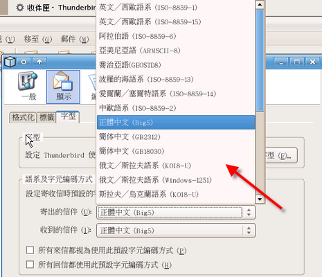
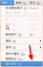

COSA活動記錄簿
留下COSA所辦活動之紀錄
首頁
相簿目錄
::
最新上傳
::
最新留言
::
熱門圖片
::
最高評分
相簿首頁
>
網站發佈相關圖檔
>
AP_Thunderbird
圖片 279/752


對圖片評分
(目前得分 : 1.6 / 5 於 9 個評分)
圖片資訊
檔案名稱:
SW_AP02_Thunderbird_html_m25e40437.png
相簿名稱:
cosa
/
AP_Thunderbird
評分 (9 次投票):
(
細節
)
檔案大小:
76 KB
增入日期:
三月 12, 2007
尺寸:
515 x 443 像素
顯示:
117 次
URL:
http://www.cosa.org.tw/photos/displayimage.php?pos=-363
我的最愛:
從我的最愛移除